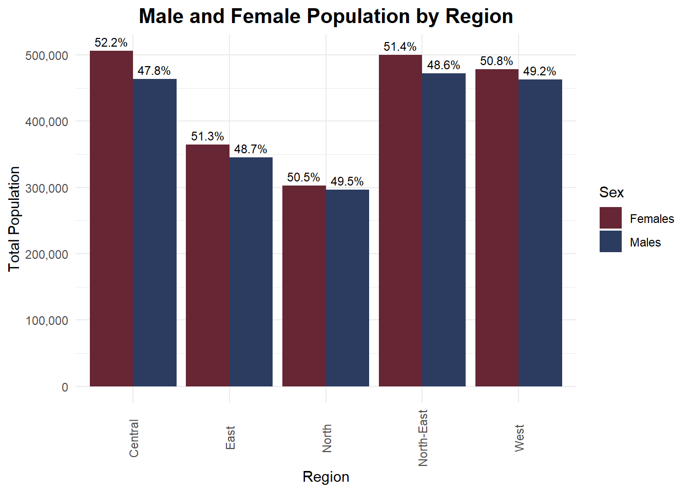

Code
pacman::p_load(tidyverse, haven,
ggrepel, ggthemes,
ggridges, ggdist,colorspace,ggdist,
patchwork, scales, ggplot2,
matrixStats, treemapify, showtext)Teo Wee Siang Roy
May 8, 2025
May 9, 2025
This review is based on the submission by Sandra Jacob, available at:
üîó https://sandrajacob-isss608.netlify.app/takehome_exercises/takehome_ex01/takehomeex01
| PA | SZ | Age | Sex | Pop | Time |
|---|---|---|---|---|---|
| Ang Mo Kio | Ang Mo Kio Town Centre | 0 | Males | 10 | 2024 |
| Ang Mo Kio | Ang Mo Kio Town Centre | 0 | Females | 10 | 2024 |
| Ang Mo Kio | Ang Mo Kio Town Centre | 1 | Males | 10 | 2024 |
| Ang Mo Kio | Ang Mo Kio Town Centre | 1 | Females | 10 | 2024 |
| Ang Mo Kio | Ang Mo Kio Town Centre | 2 | Males | 10 | 2024 |
| Ang Mo Kio | Ang Mo Kio Town Centre | 2 | Females | 10 | 2024 |
# A tibble: 0 × 6
# ℹ 6 variables: PA <chr>, SZ <chr>, Age <chr>, Sex <chr>, Pop <dbl>,
# Time <dbl>Clear and Descriptive Title with Proper Axis Labels The chart’s title — “Male and Female Population by Region” — succinctly conveys the purpose of the visualisation. Coupled with clearly labeled axes (“Region” and “Total Population”), this design adheres to fundamental graphical integrity and supports rapid comprehension. It aligns with best practices for enhancing cognitive accessibility in data graphics.
Strategic Use of Color for Categorical Differentiation The use of high-contrast, intuitive colors (maroon for Females and navy for Males) effectively encodes the categorical variable (Sex). This leverages pre-attentive visual processing, enabling users to instantly distinguish between gender groups. The visual encoding is both aesthetically pleasing and functionally efficient, which is crucial in comparative visualisations.
Inclusion of Percentage Labels to Add Analytical Depth Each bar is annotated with percentage labels that represent the proportion of each gender within its respective region. This additional layer of information transforms a basic bar chart into a more analytically enriched visual, allowing users to compare both absolute values and relative gender compositions simultaneously. This reflects the principle of “deriving insight” rather than merely displaying raw data” — a key goal in visual analytics.
While the inclusion of percentage labels is commendable, their placement above the bars results in visual congestion—especially in regions like North-East and West, where the height differences between segments are minimal. This diminishes readability and increases cognitive load. To resolve this:
position_stack(vjust = 0.5)ggrepel for smart label adjustmentAlthough percentage labels are presented, the bar height still encodes absolute values. This can lead viewers to focus on population differences rather than proportional differences. A 100% stacked bar chart would better align with the intent to highlight gender balance within each region.
Grouped bar charts are ideal for comparing totals but are less effective for showing composition within a group. A normalized horizontal stacked bar chart would:
gender_summary_long <- respop_cleaned %>%
group_by(Region, Sex) %>%
summarise(Total_Pop = sum(Pop), .groups = "drop")
#Calculate total population per region
gender_summary_long <- gender_summary_long %>%
group_by(Region) %>%
mutate(
Region_Total = sum(Total_Pop),
Percent = (Total_Pop / Region_Total) * 100
)
#Plot side-by-side bars
ggplot(gender_summary_long, aes(x = Region, y = Total_Pop, fill = Sex)) +
geom_col(position = "dodge") +
geom_text(
aes(label = paste0(round(Percent, 1), "%")),
position = position_dodge(width = 0.9),
vjust = -0.5,
size = 3, family = "nunito"
) +
labs(
title = "Male and Female Population by Region",
x = "Region",
y = "Total Population"
) +
scale_y_continuous(labels = scales::comma) +
theme_minimal(base_family = "nunito") + theme(axis.text.x = element_text(angle = 90, vjust = 0.5),plot.title = element_text(hjust = 0.5, size = 15, face = "bold", family = "nunito")) +
scale_fill_manual(values = c("Females" = "#662633", "Males" = "#2C3C60"))
gender_summary_long <- respop_cleaned %>%
group_by(Region, Sex) %>%
summarise(Total_Pop = sum(Pop), .groups = "drop") %>%
group_by(Region) %>%
mutate(
Region_Total = sum(Total_Pop),
Percent = (Total_Pop / Region_Total) * 100,
Label = paste0(round(Percent, 1), "%\n(", scales::comma(Total_Pop), ")")
)
# Plot: stacked bar with % + population inside bars
ggplot(gender_summary_long, aes(x = Region, y = Percent, fill = Sex)) +
geom_col(position = "stack", width = 0.6) +
# Percentage + population inside each segment
geom_text(
aes(label = Label),
position = position_stack(vjust = 0.5),
color = "white",
size = 3, family = "nunito"
) +
labs(
title = "Gender Distribution by Region (2024)",
subtitle = "Each bar shows gender % and absolute population count",
x = "Region",
y = "Percentage (%)",
fill = "Gender"
) +
scale_y_continuous(labels = scales::percent_format(scale = 1)) +
scale_fill_manual(values = c("Females" = "#A93226", "Males" = "#2C3E50")) +
theme_minimal(base_family = "nunito") +
theme(
axis.text.x = element_text(angle = 45, hjust = 1),
plot.title = element_text(hjust = 0.5, face = "bold", size = 15),
plot.subtitle = element_text(hjust = 0.5, size = 11)
)This revised visualisation enhance both analytical clarity and graphical integrity:
48.7%\n(123,456)), allowing the viewer to simultaneously interpret relative proportion and actual magnitude.position_stack(vjust = 0.5), increasing legibility and reducing visual clutter.These improvements follow the visual design principles outlined in Lesson 2: Designing Graphs to Enlighten, particularly:
gender_summary_long <- respop_cleaned %>%
group_by(Region, Sex) %>%
summarise(Total_Pop = sum(Pop), .groups = "drop") %>%
group_by(Region) %>%
mutate(
Region_Total = sum(Total_Pop),
Region_Percent = round((Total_Pop / Region_Total) * 100, 1),
Label = paste0(Region_Percent, "%\n(", scales::comma(Total_Pop), ")")
) %>%
ungroup() %>%
mutate(
Region = fct_reorder(Region, Region_Total, .desc = TRUE), # sort by Region_Total
Sex = factor(Sex, levels = c("Males", "Females")) # ensure stacking order
) %>%
arrange(Region, Sex) # ensure correct stacking order
# Plot
ggplot(gender_summary_long, aes(y = Region, x = Total_Pop, fill = Sex)) +
geom_col(position = "stack", width = 0.6) +
geom_text(
aes(label = Label),
position = position_stack(vjust = 0.5),
color = "white",
size = 3,
family = "nunito"
) +
labs(
title = "Total Male and Female Population by Region (2024)",
subtitle = "Labels show % within each region and absolute population",
x = "Total Population",
y = "Region",
fill = "Gender"
) +
scale_x_continuous(
labels = scales::label_comma(),
breaks = seq(0, 1000000, 100000)
) +
scale_fill_manual(values = c("Females" = "#A93226", "Males" = "#2C3E50")) +
theme_minimal(base_family = "nunito") +
theme(
axis.text.y = element_text(size = 10),
plot.title = element_text(hjust = 0.5, face = "bold", size = 15),
plot.subtitle = element_text(hjust = 0.5, size = 11)
)Building on the earlier stacked percentage chart, this updated visualisation improves the clarity, comparability, and contextual storytelling of the gender distribution across regions in 2024.
50.5% (302,710)), enabling multi-level insight in a compact, readable form.These refinements not only retain the strengths of the previous version but enhance the visual’s ability to communicate both structure (proportions) and magnitude (totals) — an important principle covered in Lesson 2: Designing Graphs to Enlighten.